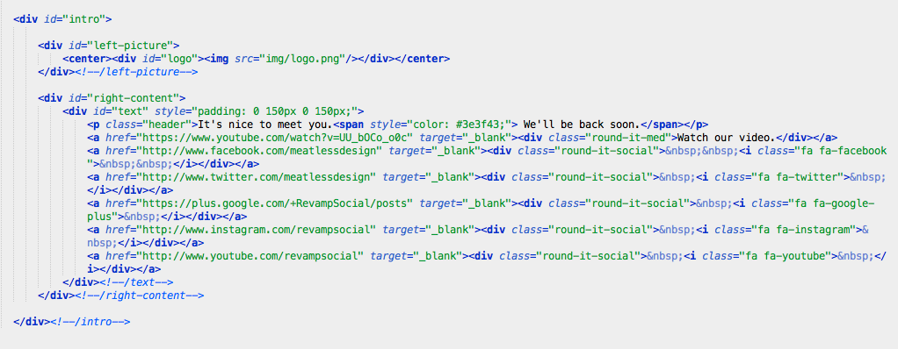

Created: March 17, 2014
Updated: April 7, 2014
By: Robert Finch
Help: Dedicated Support Forum
Thank you for purchasing my theme. If you have any questions that are beyond the scope of this help file, please visit the official Meatless Support Forum. Thanks so much!
This theme is a liquid layout with two columns. All of the information within the main content area is nested within a div with an id of "intro". The left column's content is nested within a div with an id of "left-picture". The right column's content is nested within a div with an id of "right-content".
If you would like to edit the color, font, or style of any elements in one of these columns, you would do the following:
#left-content {
color: #someColor;
}
If you find that your new style is not overriding, it is most likely because of a specificity problem. Scroll down in your CSS file and make sure that there isn't a similar style that has more weight.
I.E.
#intro {
color: #someColor;
}
So, to ensure that your new styles are applied, make sure that they carry enough "weight" and that there isn't a style lower in the CSS file that is being applied after yours. In addition, you can also do a find and replace in any text editor. Replace the current hex color code of #33ccff with the hex color code of your choice.
You can find your hex color code at ColorHexa.
I'm using multiple CSS files in this theme. The only one you need to worry about is the main "style.css" file in the base directory. All other CSS files are things that should not be changed, like FontAwesome's font icon integration that enables us to generate social icons with CSS.
The second file contains all of the specific stylings for the page. The file is separated into sections using:
/* === Left Sidebar === */ some code /* === Right Content === */ some code
To enable your images to be retina ready, simply add a duplicate file of your image that is twice the size and add "@2x" before the file extension. Example:
logo.png
gets duplicated at double the size and is called...
logo@2x.png
The site does the rest of the work for you!
If you would like to edit a specific section of the site, simply find the appropriate label in the CSS file, and then scroll down until you find the appropriate style that needs to be edited.
The logo you use inside the left content can be replaced by simpling replacing the "logo.png" file in the "img" folder. You can easiliy add different social icons to the right content section by switching out the FontAwesome icon names. You can learn more about FontAwesome on their website.
The CSS animations used are open-source and are from Justin Aguilar. You can easily edit the animations by switching out the id of the div with a new div id. For example, you can change the div id of "bigEntrance" to the div id of "pulse" or any other div id name on the CSS animations example website.
This theme imports two main JavaScript / Additional CSS files and one built-in JavaScript function in the file "index.html".
I've used the following images, icons or other files as listed.
Once again, thank you so much for purchasing this Meatless theme. If you have any questions, please open a ticket on our Dedicated Support Forum.
Robert Finch
Learn more about Meatless Design